Inicio
Presentación web interactiva
Gobierno y fallas de mercado
Unidad Temática IV · Economía Política · FCA–UNNE
Una clase para leer los mercados cuando el precio no alcanza: externalidades, derechos de propiedad, bienes públicos, recursos comunes y herramientas de intervención.
Material base: UT 4 Gob y Fallas de Mercado 26 · PDF adjunto
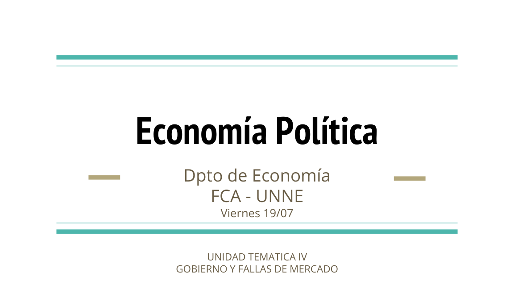
Inicio
Ruta de la clase
Secuencia pedagógica
Primero fijamos el concepto, después construimos intuición con casos cercanos, luego discutimos ejemplos actuales y finalmente formalizamos con teoría y herramientas.
01
DefiniciónQué falla, quién genera el efecto, quién lo recibe y quién paga.02
IntuiciónPrecio de mercado ≠ valor social.03
EjemplosRuido, contaminación, erosión, carbono, arbolado, logística y pesca.04
TeoríaMedición, Coase, impuestos, subsidios, permisos y bienes comunes.Para discutir
Usá esta slide como pausa para conectar concepto, ejemplo y herramienta.
Inicio
Temas centrales
Qué debe quedar claro al terminar
La unidad trabaja cuatro núcleos: fallas de mercado, externalidades y soluciones, teorema de Coase, y clasificación de bienes según rivalidad y exclusión.
- Fallas de mercado: cuando el precio deja afuera información relevante.
- Externalidades: efectos sobre terceros no incorporados al precio.
- Coase: negociación, derechos de propiedad y costos de transacción.
- Bienes públicos, privados, recursos comunes y free rider.
Para discutir
Usá esta slide como pausa para conectar concepto, ejemplo y herramienta.
Definición
Economía y ambiente
El puente conceptual de la unidad
La economía ambiental aparece cuando el análisis económico reconoce que la naturaleza presta servicios, absorbe costos y genera valor aunque muchas veces no tenga mercado explícito.
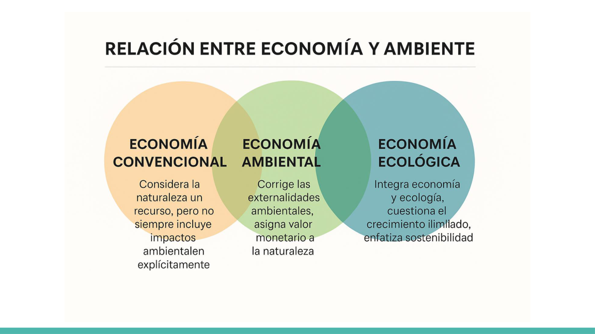
PDF p.6: relación entre economía convencional, ambiental y ecológica.
Definición
Falla de mercado
Cuando el precio deja de ser una señal suficiente
El mercado falla cuando la asignación descentralizada no logra un resultado eficiente. En estos casos hay valor económico que no aparece correctamente reflejado en el precio.
- Ausencia de mercado: el bien o servicio no tiene precio observable.
- Derechos de propiedad mal definidos o difíciles de ejercer.
- Información incompleta o asimétrica.
- Costos o beneficios sobre terceros que no participan de la transacción.
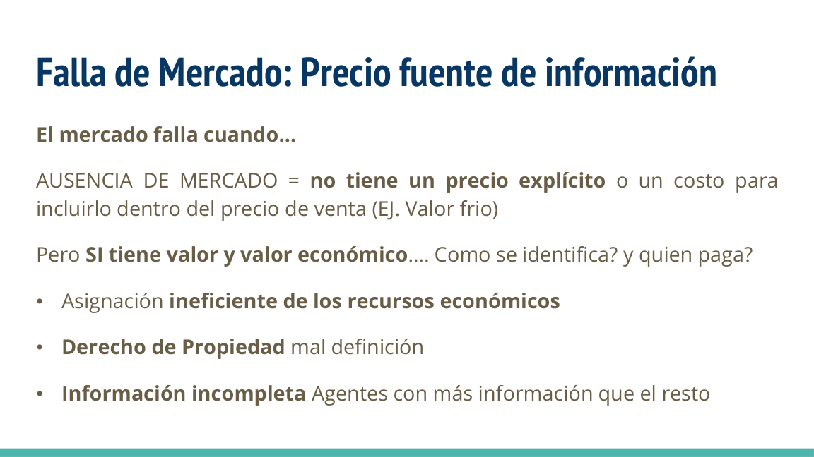
Definición
La pregunta clave
¿Cómo identificar y quién paga?
El problema práctico no es solamente decir “hay impacto”. La pregunta económica es cómo se identifica, cómo se mide y qué mecanismo permite incorporarlo a las decisiones de consumo, producción o política pública.
Tiene valor económico aunque no tenga precio de mercado.
Para discutir
Usá esta slide como pausa para conectar concepto, ejemplo y herramienta.
Definición
Externalidad
Definición operativa
Una externalidad es un beneficio o un costo que surge de una acción de consumo o producción y afecta a un tercero que no participa directamente de la transacción.
- Puede ser positiva o negativa.
- Puede originarse en el consumo o en la producción.
- Al inicio suele estar sin cuantificar.
- Genera una brecha entre beneficio/costo privado y beneficio/costo social.
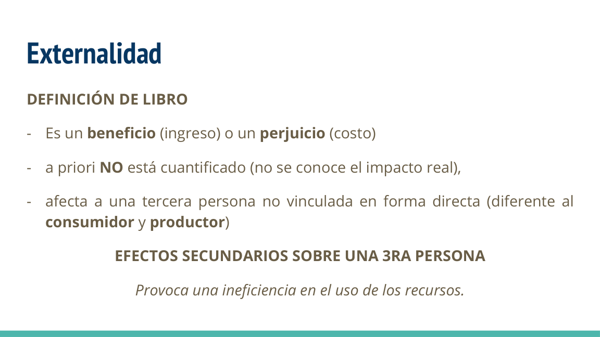
Intuición
Intuición cotidiana
La música en la playa
Una persona obtiene utilidad escuchando música. Otras personas que llegan a la playa reciben ruido. El precio de la música o del parlante no contiene automáticamente el costo de incomodidad de terceros.
¿Quién genera la externalidad?
¿Quién la recibe?
¿Hay un precio observable para el ruido?
¿Puede resolverse conversando, regulando o asignando derechos?
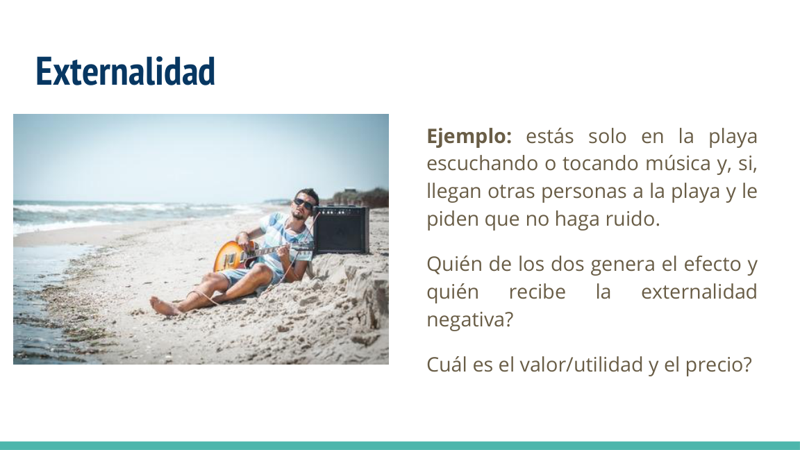
Intuición
Ruido, espacio público e incentivos
Del ejemplo simple al problema económico
La externalidad aparece porque las decisiones individuales no incorporan plenamente el efecto sobre terceros. La solución puede ser privada, normativa o tecnológica, según los costos de coordinación y la posibilidad de medir el daño.
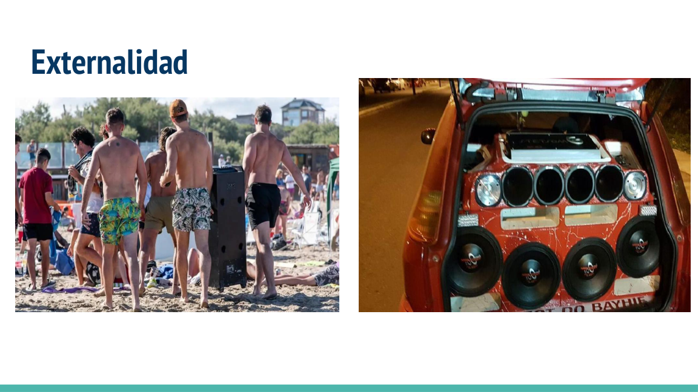
Intuición
Valor económico total
Cuando no hay precio directo
Muchos bienes y servicios ambientales no se compran ni se venden en mercados convencionales. Para aproximar su valor se buscan vínculos con bienes que sí tienen precio: sustitutos, complementarios, costos evitados o cambios en productividad.
- Valor de uso directo: producción, consumo, recreación.
- Valor de uso indirecto: regulación hídrica, sombra, captura de carbono.
- Valor de no uso: existencia, legado, conservación.
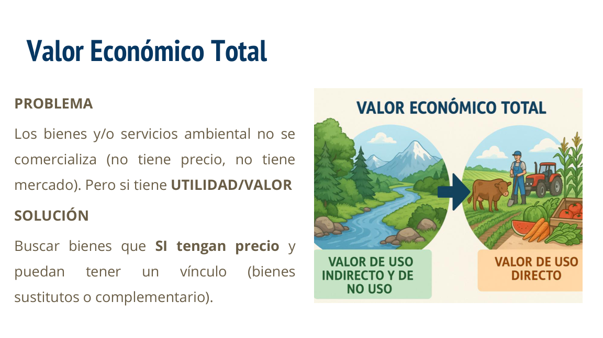
Intuición
Precio y valor
El precio observado no agota el valor económico
Dos productos pueden tener precios distintos por marca, historia, diseño, percepción o escasez. En externalidades ocurre algo más profundo: parte del valor o del costo queda fuera del precio.
Caso yerba mate: precio, diferenciación y valor percibido.
Intuición
Crear precio, mercado e incentivos
Cuando una regla cambia la conducta
En algunos casos se crea un mercado o una señal de precio para ordenar el uso de un recurso escaso: vasos retornables, depósitos, permisos, cargos, multas o recompensas. La clave está en alinear incentivos privados con objetivos sociales.
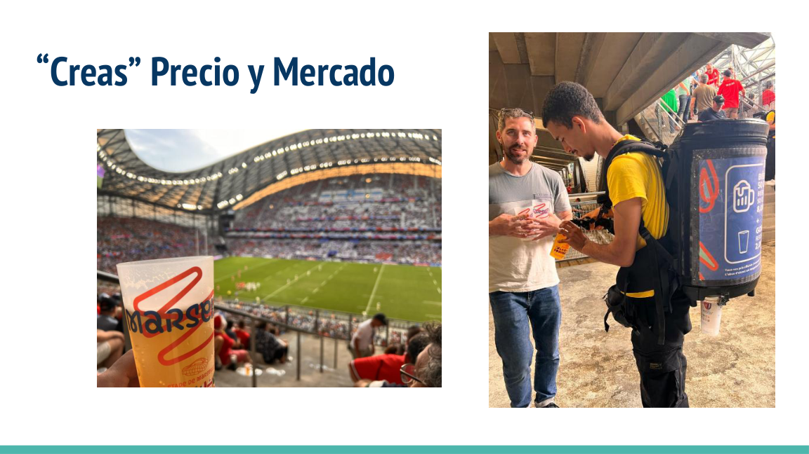
Ejemplos
Ejemplos actuales
De lo cotidiano a lo productivo, ambiental y territorial
La teoría se entiende mejor cuando se ve dónde aparece: ruido, fitosanitarios, erosión, biogás, contaminación industrial, carbono, arbolado urbano, logística portuaria y pesca.
Ejemplos
Camas biológicas
Externalidad y prevención en el uso de fitosanitarios
El manejo de fitosanitarios tiene momentos críticos: preparación y carga del equipo, lavado del aplicador y tratamiento de envases. Una cama biológica busca evitar que residuos terminen afectando suelo, agua o terceros.
- Problema: riesgo de contaminación no incorporado plenamente al costo privado.
- Solución: infraestructura de bajo costo relativo para reducir daño esperado.
- Lectura económica: prevención, costo evitado e internalización.
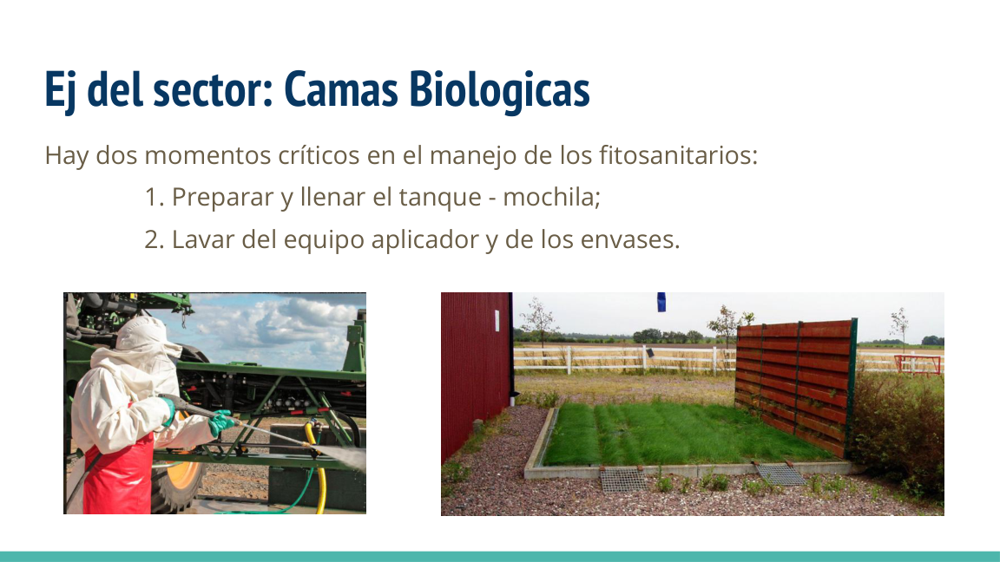
Ejemplos
Erosión en el NEA
Una externalidad ambiental con impacto productivo
La erosión del suelo afecta productividad futura, infraestructura, agua, biodiversidad y costos sociales. En sistemas agropecuarios puede no aparecer como costo inmediato de mercado, aunque deteriore la base productiva.
- Externalidad negativa de producción.
- Daño acumulativo y territorial.
- Se puede abordar con función de daño, prácticas de conservación e incentivos.
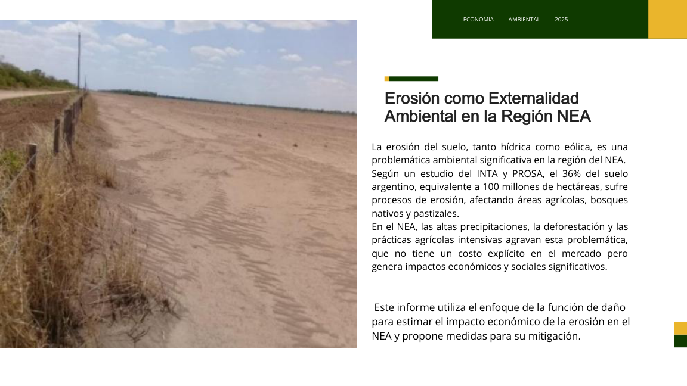
Ejemplos
Polinización y agtech
Externalidad positiva convertida en servicio
La polinización mejora rendimientos y estabilidad productiva. Empresas agtech como Beeflow muestran cómo un servicio ecosistémico puede transformarse en una propuesta comercial medible.
- Antes: beneficio externo difícil de cobrar.
- Después: servicio técnico con precio, contrato y resultado esperado.
- Lectura: mercado creado alrededor de una externalidad positiva.
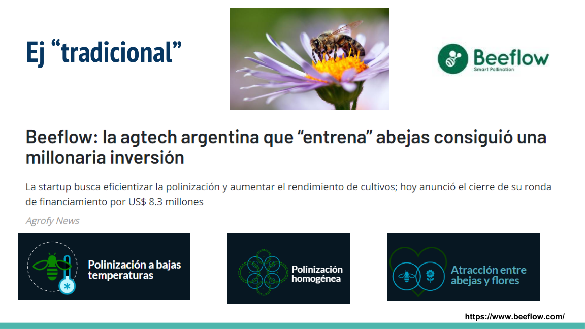
Ejemplos
Biogás: de pasivo ambiental a energía
Internalizar una externalidad positiva
El estiércol puede ser un pasivo ambiental si genera olores, emisiones o contaminación. Con tecnología de biodigestión puede convertirse en biometano, electricidad e ingreso.
- Problema inicial: residuo con costo externo.
- Innovación: conversión en insumo energético.
- Resultado: menor daño ambiental y nueva fuente de valor.
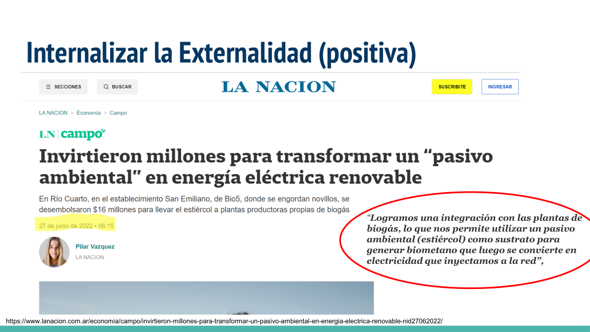
Ejemplos
Bonos y mercados de carbono
Poner precio a una emisión o a una reducción
Los mercados de carbono intentan traducir toneladas de CO₂ equivalente en unidades negociables. El punto técnico es distinguir entre reducir emisiones reales, compensar emisiones y comunicar resultados con integridad.
- EUA: permisos regulados de emisión.
- CER/créditos: reducciones certificadas o compensaciones.
- Riesgo: greenwashing si la reducción no es adicional, verificable y trazable.
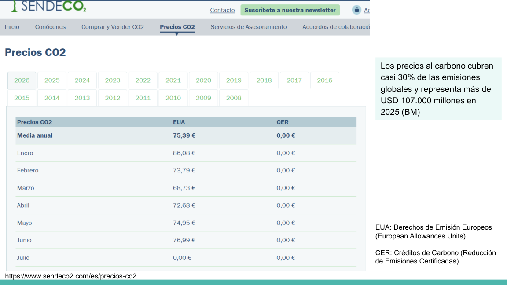
Ejemplos
Carbono en Argentina y Corrientes
Mercado voluntario, ganadería y servicios ecosistémicos
El caso argentino permite trabajar cómo un atributo ambiental puede pasar de no tener precio directo a generar certificados, créditos o señales de valor. En Corrientes, la captura de carbono y la conservación de ecosistemas abren ejemplos cercanos.
- BYMA: mercado voluntario de carbono.
- Ganadería y captura de carbono en Esteros del Iberá.
- Arbolado urbano: oxígeno, sombra, captura y bienestar urbano.
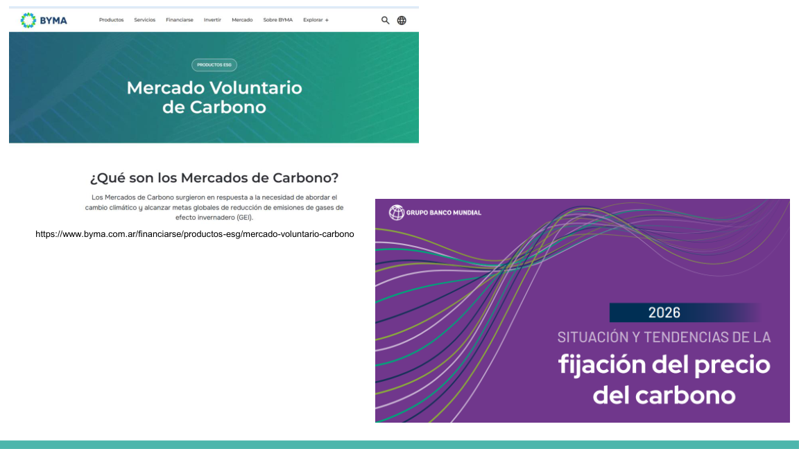
Ejemplos
Arbolado urbano de Corrientes
Externalidades positivas en la ciudad
Los árboles urbanos producen sombra, reducen temperatura, capturan carbono, mejoran paisaje y bienestar. El desafío económico es medir servicios que no siempre pasan por un mercado.
¿Quién paga plantar y mantener?
¿Quién recibe los beneficios?
¿Cómo se justifica presupuestariamente?
¿Qué indicador puede usarse: carbono, temperatura, salud, valor inmobiliario?
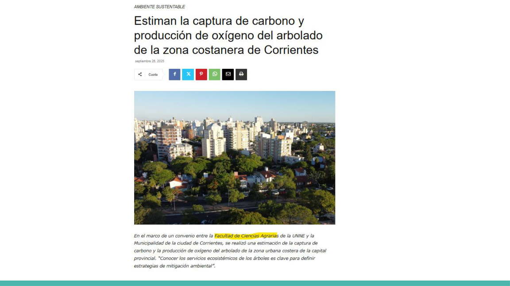
Ejemplos
Rosignano Solvay
Turismo, industria y contaminación
El caso muestra una tensión entre actividad productiva, ambiente y turismo. La externalidad negativa aparece cuando la producción industrial afecta el atractivo del territorio y los beneficios de otros actores.
- Productor: planta química.
- Terceros afectados: turistas, residentes, comercios y territorio.
- Problema económico: daño ambiental y pérdida de demanda local.
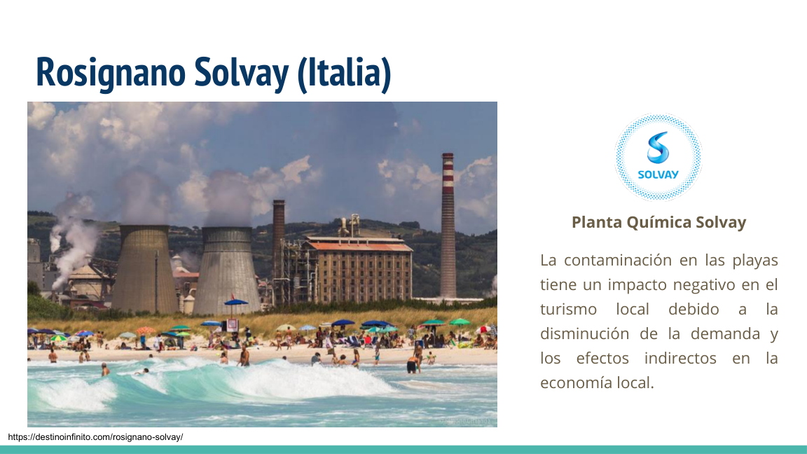
Ejemplos
Barrio Cerana y complejo portuario
Externalidad territorial y conflicto de valorización
La convivencia entre viviendas, camiones, trenes, plantas cerealeras, polvo, ruido y roedores permite discutir externalidades, derechos de propiedad, costos de transacción y valoración del daño.
- Solución privada intentada: compra o relocalización de viviendas.
- Obstáculos: escrituras, sucesiones, desacuerdo sobre valores.
- Pregunta económica: ¿precio de la vivienda o valor integral del daño?
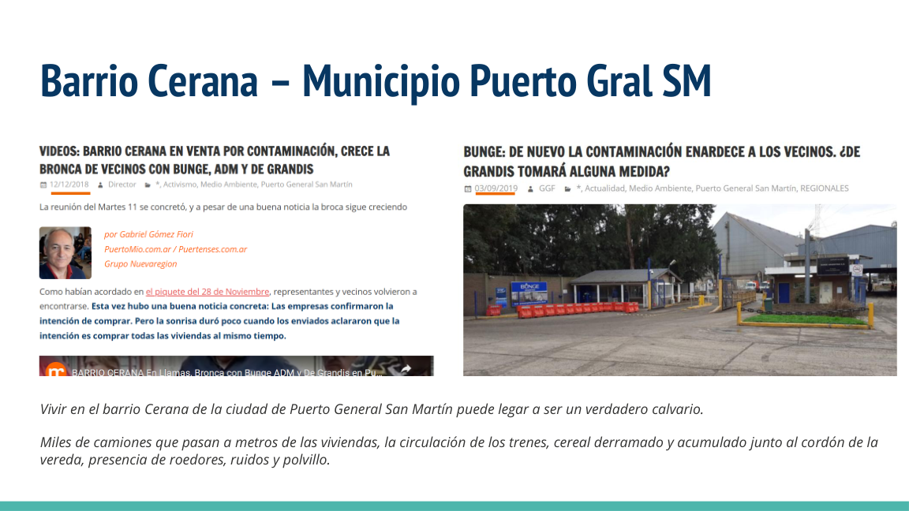
Ejemplos
Valor vs precio en conflictos territoriales
Negociar no siempre alcanza
Cuando el daño incluye pérdida de bienestar, incertidumbre, tiempo, salud, molestias y arraigo territorial, el precio de mercado de la vivienda puede ser una referencia incompleta.
¿Qué se indemniza?
¿La vivienda, la relocalización o el daño acumulado?
¿Quién tiene mejor información?
¿Cuánto pesan los costos de transacción?
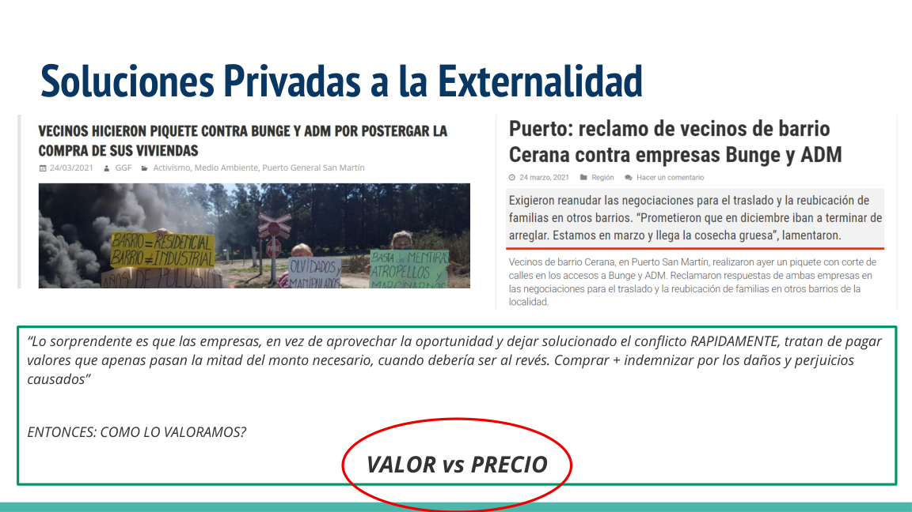
Ejemplos
Solución pública local
Tasa por tránsito pesado y mantenimiento
Una tasa municipal por camiones que ingresan a industrias y puertos puede interpretarse como intento de asignar parte del costo externo a quienes generan presión sobre caminos, tránsito y entorno urbano.
- Instrumento: cargo local.
- Objetivo: financiar mantenimiento o compensar uso intensivo.
- Discusión: diseño, proporcionalidad, destino de fondos y efectos sobre competitividad.
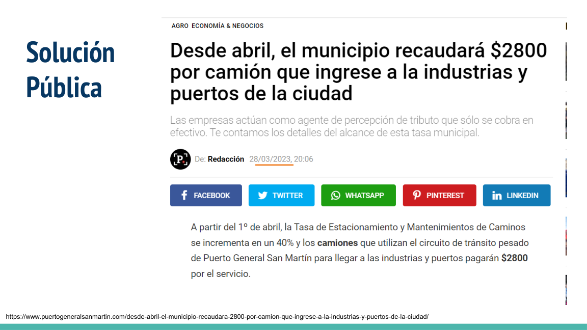
Teoría
Teoría y herramientas
Ahora formalizamos lo que vimos en los casos
La parte técnica ordena el análisis: clasificar externalidades, medir costos y beneficios, evaluar soluciones privadas y diseñar instrumentos públicos.
Teoría
Clasificación de externalidades
Origen y signo del efecto
Las externalidades pueden clasificarse según surjan del consumo o de la producción, y según generen beneficios o costos sobre terceros. Esta matriz ayuda a elegir el instrumento de corrección.
Consumo +Vacunación, educación, cultura compartida
Consumo −Fumar en ambientes cerrados, ruido urbano
Producción +I+D, polinización, tecnologías limpias
Producción −Emisiones, congestión, erosión, contaminación
Para discutir
Usá esta slide como pausa para conectar concepto, ejemplo y herramienta.
Teoría
Internalizar externalidades
Cambiar incentivos para incorporar efectos externos
Internalizar una externalidad implica modificar precios, reglas, derechos o acuerdos para que consumidores y productores consideren los efectos sociales de sus decisiones.
No se puede gestionar lo que no se puede medir; no se puede medir lo que no se puede definir.
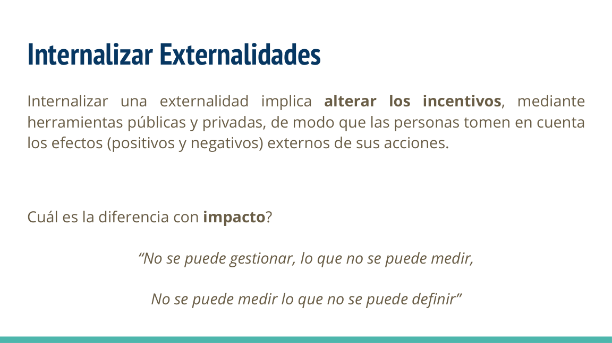
Teoría
Medición económica
Del impacto al costo marginal social
La medición separa el costo privado del costo externo. Cuando hay externalidad negativa, el costo marginal social supera al costo marginal privado.
- CMgP: costo marginal privado que enfrenta el productor.
- CE: costo externo que recae sobre terceros.
- CMgS = CMgP + CE.
- La eficiencia requiere producir donde beneficio marginal social y costo marginal social se igualan.
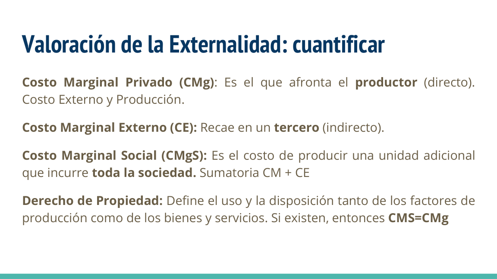
Teoría
Externalidad negativa
Producir y contaminar: ¿hasta dónde?
El equilibrio privado puede producir más de lo socialmente eficiente. La diferencia entre la cantidad de mercado y la cantidad eficiente representa una pérdida social.
- El productor decide con su costo privado.
- La sociedad soporta el costo privado más el costo externo.
- La política busca acercar la decisión privada a la socialmente eficiente.
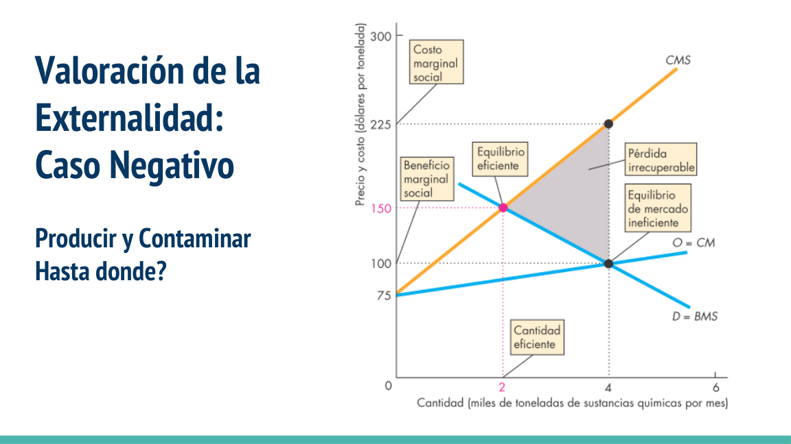
Teoría
Dos familias de soluciones
Privadas y públicas
Las soluciones privadas descansan en acuerdos, contratos o creación de precios. Las públicas usan impuestos, subsidios, normas, permisos o provisión directa. La elección depende de medición, costos de transacción y capacidad institucional.
PrivadasNegociación, contratos, mercados voluntarios, certificaciones.
PúblicasImpuestos, cargos, permisos, subsidios, regulación y provisión pública.
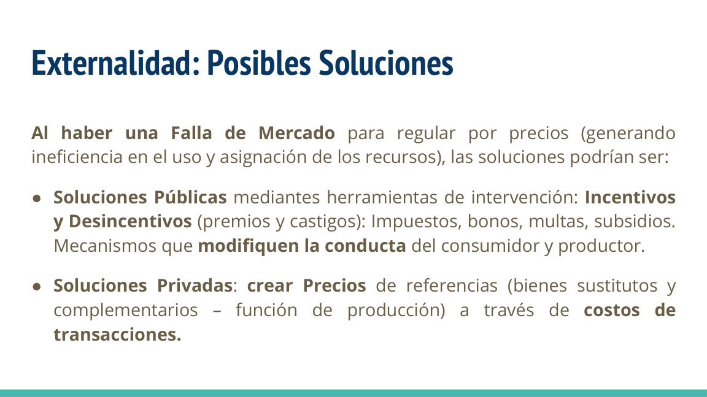
Teoría
Teorema de Coase
Negociación bajo condiciones exigentes
Si los derechos de propiedad están bien definidos y los costos de transacción son bajos, las partes pueden negociar y alcanzar una asignación eficiente, más allá de quién tenga inicialmente el derecho.
- Requiere identificar actores y daños.
- Requiere derechos claros y exigibles.
- Requiere bajos costos de negociación, información y cumplimiento.
- Cuando los costos de transacción son altos, crece el rol de la política pública.
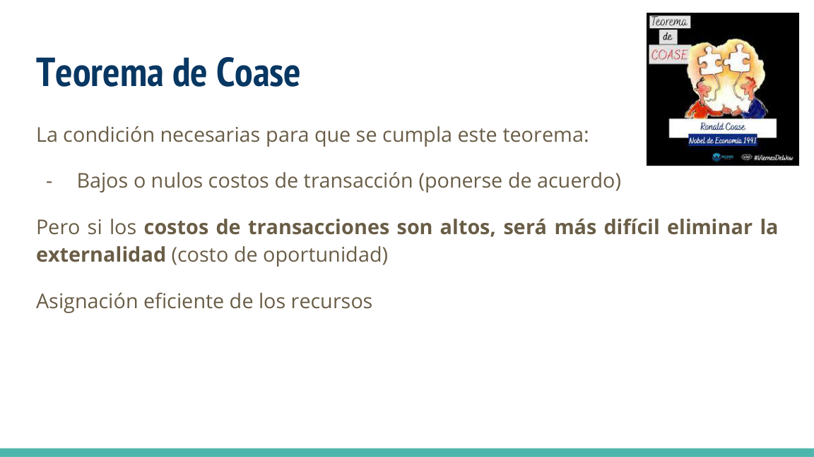
Teoría
Impuestos pigouvianos
El que contamina paga
Un impuesto pigouviano busca que el costo externo pase a formar parte del costo privado. Si el impuesto equivale al costo externo marginal, la decisión privada se acerca a la social.
CMgS = CMgP + CE → si t = CE, entonces CMgP + t = CMgS
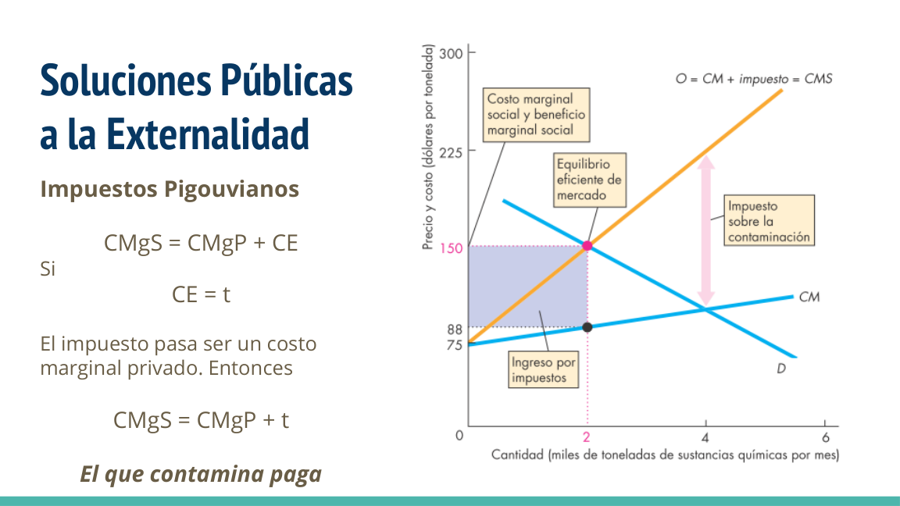
Teoría
Externalidades positivas
Cuando la sociedad recibe más que quien decide
Educación, vacunación, I+D, energías limpias o arbolado pueden generar beneficios sociales mayores que los beneficios privados. La política puede ampliar su provisión o estimular su adopción.
- Provisión pública: universidad, salud, infraestructura.
- Subsidios o cupones: reducir el costo privado de una acción deseable.
- Patentes, incubadoras y extensión: sostener incentivos a innovar y difundir conocimiento.
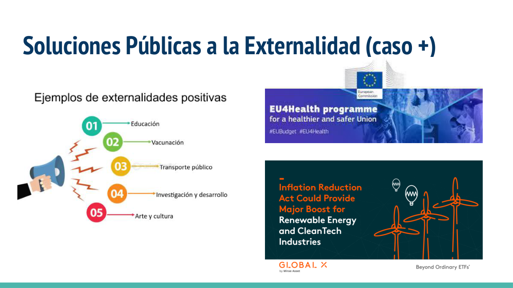
Bienes
Bienes públicos, privados y recursos comunes
Rivalidad y exclusión
La clasificación de bienes ayuda a entender por qué algunos mercados funcionan mejor que otros y por qué aparecen free riders o tragedias de los comunes.
Bienes
Free rider
Beneficiarse sin contribuir al costo
Un free rider aprovecha los beneficios de una actividad o bien colectivo sin pagar o sin colaborar en su provisión. El problema aparece especialmente en bienes públicos y servicios ecosistémicos.
- Ejemplo general: quien usa un bien colectivo sin financiarlo.
- Agricultura: infraestructura rural, agua de riego, control sanitario colectivo.
- Solución posible: reglas, aportes obligatorios, clubes, consorcios o provisión pública.
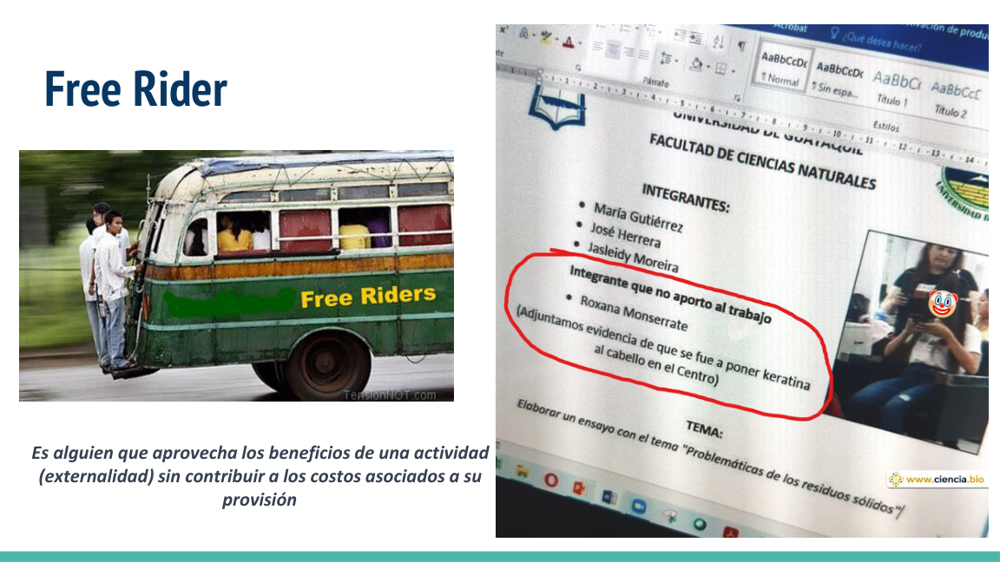
Bienes
Free rider en agricultura
Riego, infraestructura y servicios ecosistémicos
La gestión del agua, caminos rurales, sanidad vegetal o control de plagas muestra beneficios colectivos. Si algunos productores no aportan, se reduce la sostenibilidad del sistema.
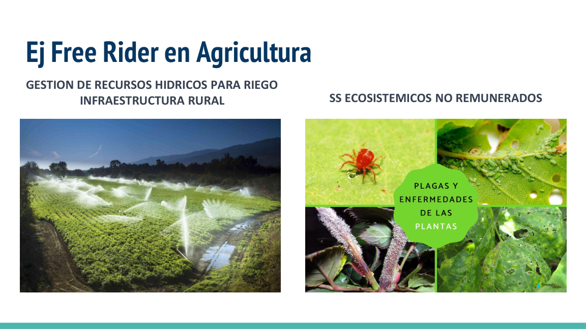
Bienes
Clasificación de bienes
Dos preguntas: ¿se puede excluir? ¿hay rivalidad?
Un bien se clasifica por el grado en que puede excluirse a quienes no pagan y por el grado en que el consumo de una persona reduce la disponibilidad para otras.
Bien privadoRival + exclusivo
alimentos, vivienda, herramientas
alimentos, vivienda, herramientas
Bien públicoNo rival + no exclusivo
defensa, alumbrado, control epidemiológico
defensa, alumbrado, control epidemiológico
Recurso comúnRival + no exclusivo
pesca, acuíferos, atmósfera
pesca, acuíferos, atmósfera
Monopolio natural / clubNo rival + exclusivo
autopista con peaje sin congestión, plataforma cerrada
autopista con peaje sin congestión, plataforma cerrada
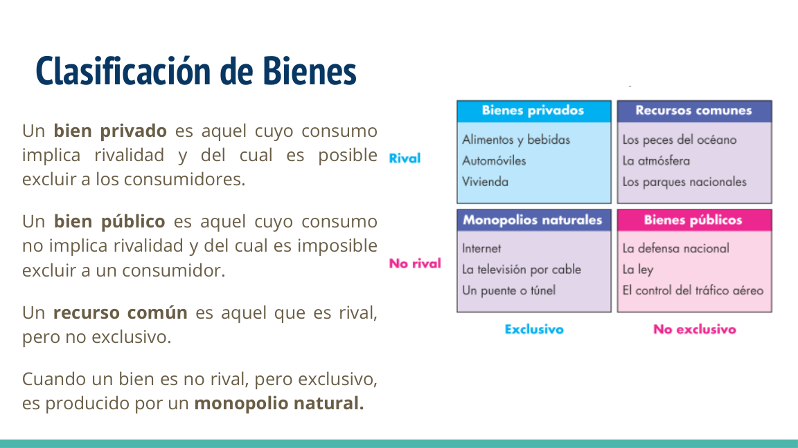
Bienes
Recurso común: pesca y Milla 201
Rivalidad sin exclusión efectiva
La pesca es un recurso común: lo que captura un barco reduce lo disponible para otros, y la exclusión puede ser costosa o incompleta. Por eso aparecen cuotas, vedas, monitoreo y acuerdos internacionales.
- Problema: sobreexplotación.
- Instrumentos: cuotas, temporadas, fiscalización y derechos de pesca.
- Objetivo: producción sostenible en el tiempo.
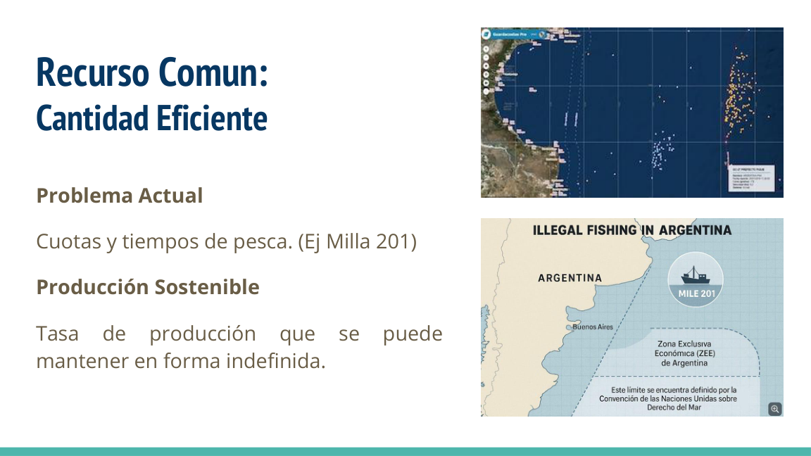
Cierre
Idea final
La economía pública empieza donde el precio no alcanza
Las fallas de mercado no implican reemplazar siempre al mercado. Implican reconocer cuándo el precio omite información relevante y qué combinación de derechos, acuerdos, medición e instrumentos públicos permite mejorar la asignación de recursos.
Diagnosticar¿Cuál es la falla?
Medir¿Qué costo o beneficio queda afuera?
Asignar¿Quién decide, quién paga y quién recibe?
Corregir¿Qué instrumento genera mejores incentivos?
Para discutir
Usá esta slide como pausa para conectar concepto, ejemplo y herramienta.